{#5} Se non ti piacciono i batteri, sei sul pianeta sbagliato
Pochi giorni all’inizio di Scienceground 1.5 @ Festivaletteratura.
C’eravamo ripromessi di essere puntuali e tempestivi, di comunicarvi tutti i progetti sottocoperta, di tenere spolverato il nostro Scienceground 1.5 nuovo fiammante. Ma, sotto l’ombrellone, troppo intenti a leggere e studiare, ci siamo scordati di voi…
Come ripagare? Così: abbiamo chiesto ai nostri futuri volontari e ospiti di proporre qualche frase dalle letture che hanno fatto per avvicinarsi al festival, e con queste abbiamo composto un piccolo percorso.
Ci vediamo a Mantova tra meno di una settimana!
Interpunzioni illustrate da Andrea De Franco.

“C’era là una donna che aveva da diciotto anni uno spirito che la teneva inferma; era curva e non poteva drizzarsi in nessun modo.”
Luca, La Bibbia
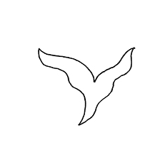
“Sarete Pasteur di microbi.”
Bruno Latour, I microbi. Trattato scientifico-politico
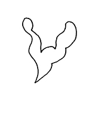
“«Uscivo allora dall’adolescenza». «Cioè quando si è impossessato di voi il microbo dell’indagine, del sentimento e del sapere».”
Corrado Alvaro, Belmoro
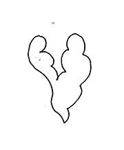
“Il selvaggio non può percepire la Bibbia del missionario; il passeggero non vede lo stesso cordame che vede l’equipaggio. Se vedessimo realmente l’universo, forse lo capiremmo.”
J.L. Borges, There Are More Things
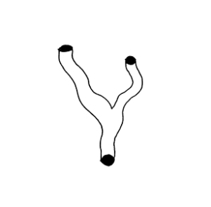
“L’être qui vient à la conscience a pour grand maître le Hasard. Le Hasard c’est la rue. La rue diverse et multiple de vérités à l’infini, plus simple que les livres.”
Louis-Ferdinand Céline, Semmelweis
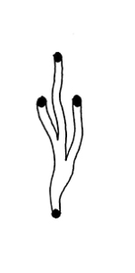
Valutando le esperienze dei pazienti, ci potremmo iniziare a chiedere che cos’è che Treponema vuole da un dato paziente? Cosa può dare in cambio?
C.E. Giraldo-Herrera, Microbes and Other Shamanic Beings, trad. it. Scienceground

“Dice qui l’avversario che non vuole tanta scienza, che gli basta la pratica del ritrarre le cose naturali; al quale si risponde che nessuna cosa è che più c’inganni che fidarsi del nostro giudizio senz’altra ragione, come prova sempre l’esperienza, nemica degli alchimisti, negromanti ed altri semplici ingegni […] E se tu dirai che le scienze, che principiano e finiscono nella mente, abbino verità, questo non si concede, ma si nega, per molte ragioni, e prima, che in tali discorsi mentali non accade esperienza, senza la quale nulla dà di sè certezza.”
Leonardo, Trattato sulla pittura
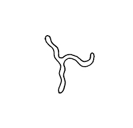
“E’ vero che (secondo il mio sistema) non c’è porzione di materia dove non vi sia un’infinità di corpi organici e animati, tra i quali comprendo non solamente gli animali e le piante, ma forse ancora altre sorte che sono per noi del tutto sconosciute. Ma non bisogna dire, per questo, che ogni porzione di materia è animata, come non bisogna dire che uno stagno pieno di pesci è un corpo animato, benché i pesci lo siano.”
Gottfried Wilhelm Leibniz, Considerazioni sui principi di vita e sulle nature plastiche
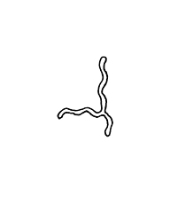
“The immense trust in Pasteur derived partly from the work that he had done before 1871, which did not concern infectious diseases, and partly from the social movement that needed these discoveries but went well beyond them without waiting for them to be made.”
Bruno Latour, The Pasteurization of France
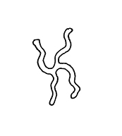
“Although these declines in mortality coincided with the intoduction of antimicrobial drugs, it would be wrong to attribute all or even the majority of this health gain to the drugs: almost without exception, the decline in deaths predates the introduction of antimicrobial drugs for civilian use at the end of the Second World War. Over half of the decline had occured before 1931. The main influences on the decline were better nutrition, improved hygiene and sanitation and less dense housing.”
Dame Sally Davies, The drugs don’t work
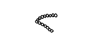
“The time may come when penicillin can be bought by anyone in the shops. Then there is the danger that the ignorant man may easily underdose himself and by exposing his microbes to non lethal quantities of the drug make them resistant. Here is a hypothetical illustration. Mr X has a sore throat. He buys some penicillin and gives himself, not enough to kill the streptococci but enough to educate them to resist to penicillin. He then infects his wife. Mrs X gets pneumonia and is treated with penicillin. As the streptococci are now resistant to penicillin the treatment fails. Mrs X dies. Who is primarily responsible for Mrs X’s death?”
Alexander Fleming, Nobel Lecture
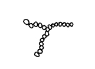
“La civiltà europea si era così bene ripulita degli interdetti arcaici sull’impurità dei morti da restare, di fronte alla forza dei morti, completamente indifesa. In qualche campagna superstiziosa si coprivano ancora gli specchi nella stanza del morto per impedire la cattura dei vivi, ma nelle grandi scuole, nelle Università illuminate, si poteva stare sicuri: I morti non possono farci nessun male, il coltello è dei vivi. […] Qualunque selvaggio, buono o cattivo, delle Samoa, come qualunque antico greco o semita sarebbero fuggiti con smisurato orrore davanti a questo spettacolo di degradazione umana e di oscuramento del sacro in un paese di supremissima, fiammeggiantissima civiltà cristiana.”
Guido Ceronetti, saggio in appendice a Il Dottor Semmelweis di Louis Ferdinand Céline
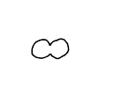
“It is virtually impossible to infect with syphilis those who have pinta. These features explain the cultural value attached to these conditions in various Amerindian contexts. However, despite their recognition of its inoffensiveness and important prospective as a vaccine, these researchers classified pinta as just another endemic disease, provoking a ‘repulsive aspect’ associated with conditions of ‘lack of education, poverty, crowded living spaces and lack of hygiene’. The WHO promoted eradication campaigns, which may have led to its extinction.”
C.E. Giraldo-Herrera, Microbes and Other Shamanic Beings
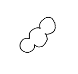
“There’s a cellular automaton called TVC. After Turing, von Neumann and Chiang. Chiang’s version was N-dimensional. That leaves plenty of room for data within easy reach. In two dimensions, the original von Neumann machine had to reach further and further – and wait longer and longer – for each successive bit of data. In a six-dimensional TVC automaton, you can have a three-dimensional grid of computers, which keeps on growing indefinitely – each with its own three-dimensional memory, which can also grow without bound. And when the simulated TVC universe being run on the physical computer is suddenly shut down, the best explanation for what I’ve witnessed will be a continuation of that universe – an extension made out of dust. Maria could almost see it: a vast lattice of computers, a seed of order in a sea of random noise, extending itself from moment to moment by sheer force of internal logic, “accreting” the necessary building blocks from the chaos of non-space-time by the very act of defining space and time.”
Greg Egan, Permutation City
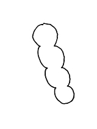
“Gorgoni, Idra e Chimere possono replicare loro stesse nella mente della superstizione, ma esistevano da prima. Sono trascrizioni, tipologie, sono archetipi all’interno di noi, e sono eterni. Come altro potrebbe avere effetti su tutti noi la pantomima del considerare falso ciò che conosciamo nello stato di veglia? È forse perché proviamo un naturale terrore verso simili entità, considerata la loro capacità di infliggere danni materiali al nostro corpo? Oh, assolutamente no! Questi terrori provengono da un passato molto più antico. Risalgono ad un tempo antecedente il tempo del corpo – e anche senza il corpo, sarebbero esistiti comunque…”
Charles Lamb, Streghe e altri terrori della notte
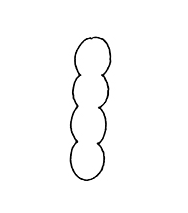
“In attesa del giorno del giudizio, i demòni godono di una certa libertà nella loro azione sulla terra; lo fanno di preferenza prendendo possesso degli uomini. Questa possessione è accompagnata spesso da una malattia, poiché questa, a titolo di conseguenza del peccato, è un’altra manifestazione dell’azione di Satana. Così gli esorcismi del Vangelo, che a volte, come qui, appaiono allo stato puro, avvengono spesso in forma di guarigione.”
La Bibbia di Gerusalemme, Edizioni Dehoniane Bologna (nota a Matteo 8,29).
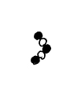
“Il principe, udendo Fersa esprimere ancora una grande paura del colera, scrollava il capo: «Se a Napoli hanno ordinato di spargerlo un’altra volta….». Come credeva alla iettatura, era incrollabile nell’opinione che il colera fosse un malefizio, un espediente di governo inteso a sfollare le popolazioni, a incutere un salutare timore nei superstiti. Dinanzi allo zio duca, sapendolo dell’opinione contraria, più “progressista”, cioè che la peste venisse per correnti atmosferiche, taceva prudentemente; ma con Fersa si sbottonava, derideva le quarantene e tutti gli altri amminnicoli fatti per darla a bere ai gonzi.”
Federico De Roberto, I Viceré
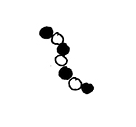
“Se non ti piacciono i batteri, sei sul pianeta sbagliato.”
Stewart Brand, Whole Earth Discipline
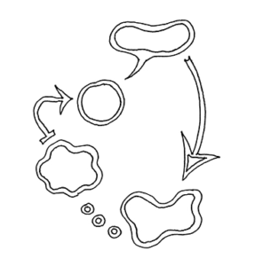